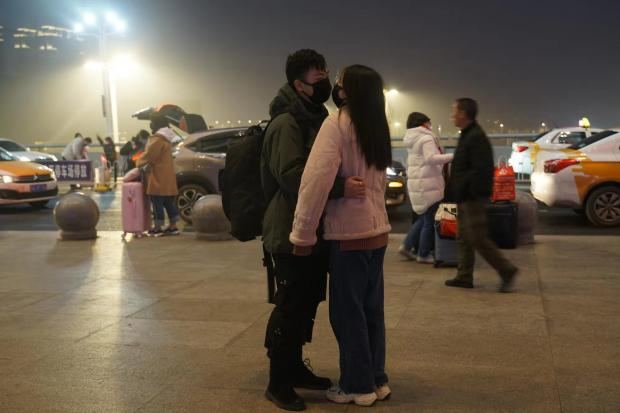
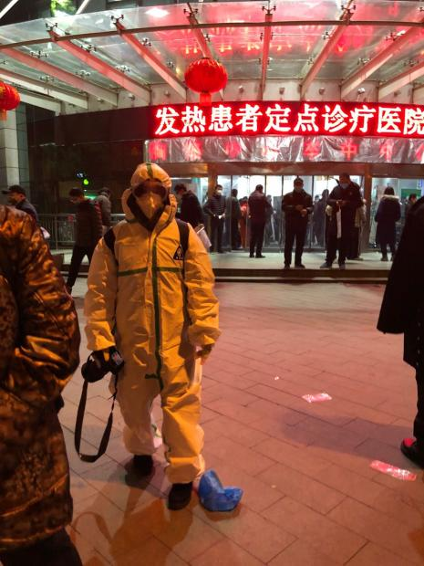
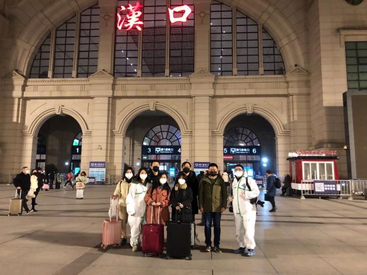

号外｜武汉封城后的24小时
原文链接 备份链接 本文由娱志The Review原创出品 华东师范大学传播学院学生娱评号 转载需申请授权 作者 | Moe，苏博 编辑 | 华实 导语 “自2020年1月23日10时起，全市城市公交、地铁、轮渡、长途客运暂停运营；无特殊 …
从火车站回来的路变成三个人，车还很少，我们一路畅行。丁刚把汽车音响声音放到最大，是伍佰的《被动》，“爱你越久我越被动……”
文 | 萧辉
2020年1月23日凌晨1点42分，我在微信朋友圈里写了一句“OH, MY GOD”。就像美剧《切尔诺贝利》开头的那句惊叹“MY GOD”。在一线采访新冠肺炎防疫，不想被人猜出个中所指，但我不由自主发了这个朋友圈。

图一，1月21日晚的汉口火车站。
18分钟后，1月23日凌晨两点整，武汉市政府发布一号“封城”令，自1月23日上午10点起，切断一些武汉出城的交通，我们称之为“交通封城”。这在新中国的历史上还未曾有过。
此前早就传有专家建议武汉“封城”。于我而言，心中的那一块石头落地了。本该如此。

图二，1月23日上午十点汉口火车站封站。
1月22日是我来武汉做新型冠状病毒肺炎疫情防控报道的第二天。第一天在火车站、机场扫了一圈，大家基本都戴着口罩，气氛虽然略显紧张，但还不是很严重。

图三，1月22日发热患者定点医疗点红十字会医院门诊。

图四，1月22日发热患者定点医疗点红十字会医院门诊。
直到1月22日夜晚我进入武汉市红十字会医院的发热门诊，一切改变了。猝不及防，我和新冠肺炎就“短兵交接”上了。应该说我还没做好心理准备，会在短时间内接触到那么多疑似新冠肺炎病患。
1月22日是武汉发热患者定点治疗制度的第一天。武汉红十字会医院作为定点单位，接受了超过其负荷的发热患者，医生疲于奔命，患者苦苦等待，但仍然盼不来一张床位，本就不开阔的空间里聚集了病毒和焦虑。突然听说有记者来了，这股情绪潮水般向我涌来。在潜意识中，似乎还有一团无声无息、无孔不入的病毒一并涌来。
虽然略有迟疑，但我没有躲闪。我耐着性子听了一个个愁眉苦脸的疑似新冠肺炎病患的倾诉。错愕和震惊。他们大多是CT显示肺部磨玻璃状病变，有的病历上直接写着病毒性肺炎，没有人写新型冠状病毒肺炎，因此并不是确诊病例。《三联生活周刊》的记者也报道了类似的病例。
用他们自己的话来说，就是“移动的病毒源”——他们本身携带极易传染的病毒，但又没有被收治住院隔离，数百号病毒性肺炎和普通发烧患者混杂在一个狭窄的大厅里，伴随着此起彼伏的咳嗽声……我当时忙于采访，现在想来当真后怕。我脑海中想起非典时期人人闻之色变的北京大学人民医院“天井”。
在发热门诊呆了一个多小时，带给我的震惊一直延续到半夜。我和同事聊了我的见闻和困惑，恰好同事采访到一位一线的医生，该医生说他们发热门诊70%的病患是典型的病毒性肺炎影像学表现——虽然因为医院没有下发试剂盒，还没有被确诊为所谓新型冠状病毒肺炎。他估算武汉实际这种病毒性肺炎感染的病患在数千名以上。结合我在红十字会医院的见闻，我感觉到疫情可能要复杂得多。防止疫情扩散，封城是绝对必要的选择。
理性是一回事，一旦成为现实，还是有点震惊。凌晨两点，我第一时间（幸亏我喜欢熬夜的特长发挥了价值）去敲前方指挥部带头大哥高昱（简称高队）的门，其实大家也都没睡。我们此行报道团八人，三名同事之前已经明确23日要回家过年，但这个“封城”的通知也打乱了他们原有计划，出武汉的窗口期只有不到八个小时了。
大家迅速召集在高队房间开会。第一次遇到封城的事情，大家心情沉重，但又带点莫名的情绪。高队分析一旦封城，可能一个月左右就出不去了，因此愿意在这窗口期撤离的同事得迅速做决定。最后的决定是高队、摄影记者丁刚和我留守武汉，当务之急就是要送五位离开的同事去汉口火车站买票出武汉。
高队在我们来武汉的第一天，就找当地的朋友借了一辆GL8七座别克商务车，采访没用上，在“胜利大逃亡”（战略性撤退）时却派上了用场。我们八个人坐上高队的车，在夜幕的掩映下往汉口火车站而去。凌晨三点多到汉口火车站，售票厅已经聚集了不少排队买票准备最后时候出汉的人。
一位1月21日从北京过来探访朋友的小伙子，上午从北京出发时气氛还不紧张，当晚到武汉，防疫形势骤然突变，他没见上朋友，在宾馆刷了两天手机和看电视，也选择连夜出走。
“我可不想困在这座危城中。”他说。我心里一惊，我就主动选择留在“危城”中。要说不害怕是假的，在发热门诊如潮水般的疑似感染者向我涌来的画面未曾消去，但是在这一重大的历史现场，作为记者的在场记录是必不可少的。而且我有个疑问，新冠肺炎疫情如何发展如何救治，我想留下来寻找答案。

图五，1月23日凌晨三点半汉口火车站送部门同事离汉。
五位小伙伴都顺利买到了车票，我们在汉口火车站拍了团队合影。无论是战略撤退的，还是留下来的小伙伴，都是棒棒的。
从火车站回来的路变成三个人，车还很少，我们一路畅行。丁刚把汽车音响声音放到最大，是伍佰的《被动》，“爱你越久我越被动，只因我的爱不再为你挥霍。是我让我的心失去自由，却再也没有勇气放纵。“哈哈，我们就是想要在这凌晨无人的街道上放纵下。
高队说，等我没事干了，我就开车拉着你们两个游遍武汉三城。我切了一声，怎么也得雄心壮志开车周游世界嘛。
回到宾馆，已近五点多，大家约好九点出发去汉口火车站看历史性的封城时刻。本来应该小睡一会儿，但是一夜情绪跌宕起伏，说什么也睡不着。此刻恐惧又如水般将我淹没。这次的新型肺炎病毒很容易传播，有专家说自己因为没有戴护目镜就感染了，而我到重灾区接触了那么多疑似病人。想起一位医生说的，这个病有一定比率的致残率。我突然手软、脚软，大脑开始云游了：想想自己还有什么未实现的愿望，有没有欠谁的钱，想和谁来一场倾城之恋。奇奇怪怪的念头串了一晚上，最后我想，我要好好活着，我还想用力去爱，做我喜欢做的事，珍惜我喜欢的人。渐渐释然。
收到一个友人的问候，问我喜欢吃什么，给我寄过来。大家果然知道我这吃货，再害怕也要吃好的。不过朋友认真问我需要什么帮助时，我很郑重回答：如果万一我不幸感染了，请帮我找好的医疗资源，我不希望感染了没地方治。
躺了一个多小时，爬起来写了武汉交通封城的消息稿，这应该是第一家现场报道了吧。高队改完发掉，早上九点半，我们又开车到汉口火车站看封站情形。这是汉口火车站自1898年建站以来首次封站，个中意味值得揣摩。
根据车站规定，持有上午10点之前车票的人都可以乘车离开。安检人员站成一列，核查乘客信息，有些持有中午或者下午火车票的旅客被禁止进入，有人被迫回去退票。但到最后五分钟，只要手中持有当日票的乘客都可以进站离开武汉，再一次诠释要坚持到最后一刻的鸡汤案例。这个做法一方面颇有人性温度，但另一方面，新冠肺炎潜伏在人体内不易被发现，感染者可能并不发烧，排查难度难免会有所增加，想想又让人忧虑。
上午10点钟，武警人员站成一列，汉口火车站正式封站。我们留守下来了。
财新博客版权声明：财新博客所发布文章及图片之版权属博主本人及/或相关权利人所有，未经博主及/或相关权利人单独授权，任何网站、平面媒体不得予以转载。财新网对相关媒体的网站信息内容转载授权并不包括财新博客的文章及图片。博客文章均为作者个人观点，不代表财新网的立场和观点。
原文链接 备份链接 本文由娱志The Review原创出品 华东师范大学传播学院学生娱评号 转载需申请授权 作者 | Moe，苏博 编辑 | 华实 导语 “自2020年1月23日10时起，全市城市公交、地铁、轮渡、长途客运暂停运营；无特殊 …
原文链接 备份链接 3月21日。 封城第59天。这么长时间了！ 昨天那么大的太阳，今天突然就阴了。下午还下了点雨。这时节的春雨，对于院子里的树以及花，都还是很需要的。前两三天，武大樱花盛开，树下空荡无人，估计是记者拍了一些照片，同学群里便 …
原文链接 备份链接 120一线护士：拉着病人却送不进医院丨武汉肺炎亲历 2020-01-25 21:10 作者：晏耀斌 来源：中国经营网 本报记者 晏耀斌 武汉报道 1月25日，大年初一，护士高琴（化名）一早就随着120出诊了，她在武汉一 …
原文链接 备份链接 本视频为今年的年三十，武汉父母与身在外地的孩子 隔空互送新年祝福 年夜饭，是中国人最看重的家庭宴会。1月24日，武汉封城第二天，年三十，有23个武汉人给我们分享了他们的年夜饭。 @王启明： 今天是武汉封城的第二天，也是 …
原文链接 备份链接 1月23日凌晨，武汉宣布自10时起，全市的航空、铁路、城市公交、地铁、轮渡、长途客运暂停运营，无特殊原因，市民不要离开武汉。新型冠状病毒肺炎，正考验着这座九省通衢的特大城市。 此后24小时，真实故事计划访问了几位选择留 …